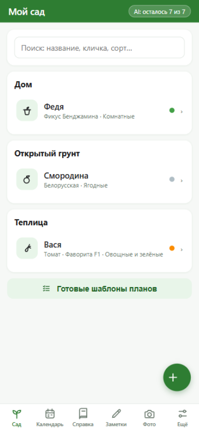
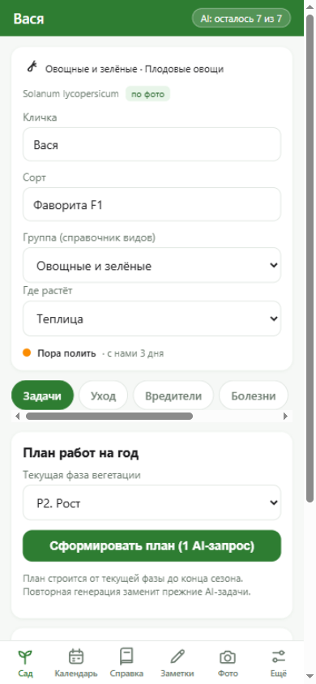
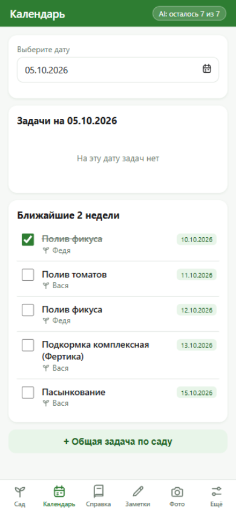
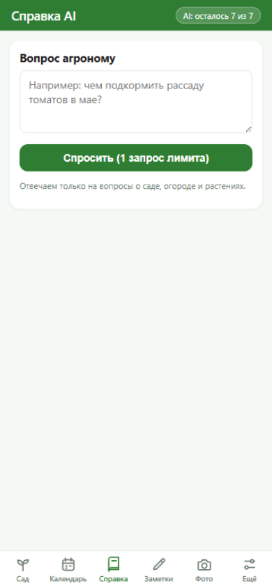

Сфотографируйте растение — AI определит вид, составит план ухода на сезон и будет следить за поливами. Всё остальное — удовольствие от сада.
Работает в браузере — без установки и регистрации. Данные хранятся только у вас.
Ожидание и реальность
Записали посевы в январе, забыли подкормить в мае, вспомнили о фитофторозе в августе — когда уже поздно. Что это за сорт? Когда сажали? Никто не помнит.
Сфотографировали рассаду — растение появилось в саду с планом на весь сезон. Просрочили полив — карточка «покраснела». Сорвали первый урожай — он попал в историю сезона. Ничего запоминать не нужно.
Как это работает
Никаких сложных настроек: приложение заточено под дачника, которому некогда разбираться с программами.
Рассаду на подоконнике, куст в теплице или капризный фикус. Можно выбрать снимок из галереи.
Вид, группа, план ухода на сезон: посевы, подкормки, поливы, обрезка — с датами, сдвинутыми под вашу климатическую зону.
Задачи в календаре, поливы под контролем, урожай в истории. Пропустили — приложение честно покажет.
Посмотрите
Это настоящие снимки веб-версии — той самой, что откроется по кнопке выше.


Растение-питомец
Дайте кличку — и карточка оживает: сколько дней растение с вами, как оно себя чувствует, не пора ли полить.
Что ещё умеет
Ищите по названию, кличке, сорту и даже латыни.
Дневник по каждому растению и общие заметки — с редактированием.
Считает килограммы и штуки, подводит итог каждого сезона.
Добавляйте снимки — увидите, как растение менялось месяц за месяцем.
«30 дней вместе», «Первый урожай» — приятные вехи без казино.
Спросите что угодно: препараты, дозировки, вредители — с фото или без.
Повторные вопросы по той же культуре не расходуют дневной лимит.
Пересадка, грунт, свет — отдельные рекомендации для домашних любимцев.


Тарифы
Все функции сада бесплатны навсегда. Лимит касается только обращений к AI — и вот тут у подписки есть смысл.
Оплата через RuStore. Пробный период — 7 дней, списание после его окончания; отменить можно до списания в RuStore → Профиль → Подписки. Условия подписки.
Вопросы
Список растений, задачи, заметки и фото хранятся только на вашем устройстве. На сервер уходят лишь текст запроса и сжатая фотография — в момент обращения к AI, и не сохраняются там.
Функционально — одинаково. Приложение для Android живёт в RuStore и ставится как обычное; веб-версия открывается по ссылке в любом браузере, включая iPhone — можно добавить на экран «Домой» и пользоваться как приложением.
Это и задумано: фотографируете — остальное делает AI. Определит вид, подберёт группу, составит план с датами. Ошибся — поправите в два тапа.
Иногда. Уверенность показывается в процентах у каждого кандидата, а группу всегда можно исправить. Ответы агронома — справочные: для точной диагностики лучше приложить фото крупным планом.
Всё про сад: растения, календарь, шаблоны планов, история, заметки, достижения. Лимит 7 AI-запросов в день — этого хватает на пару консультаций ежедневно.
RuStore → Профиль → Подписки → отменить автопродление. Доступ сохранится до конца оплаченного периода, деньги за текущий период не списываются повторно.
Да: веб-версия полностью самостоятельна. Подписка пока оформляется в приложении Android через RuStore.
Разработчик-садовод Рудак Владимир. Пишите: navi-com@yandex.ru — читаю всё.
Приватность